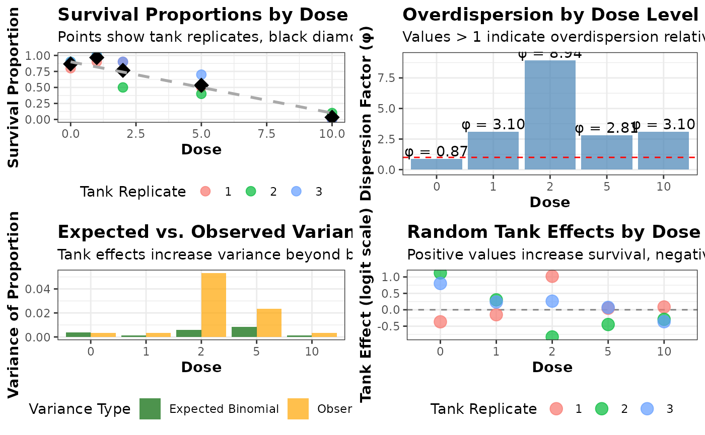
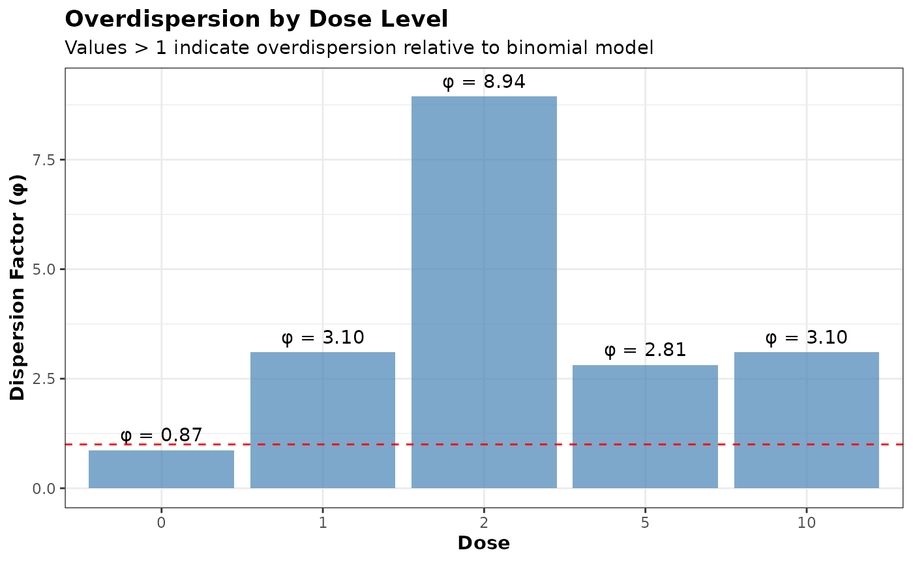
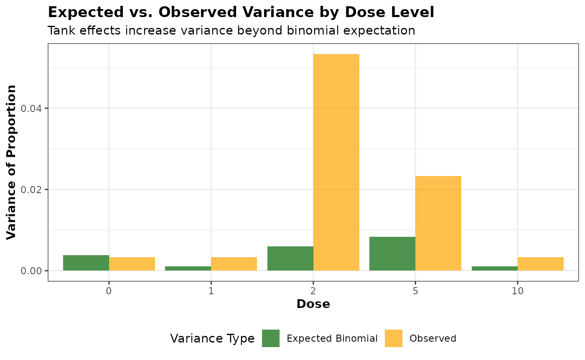
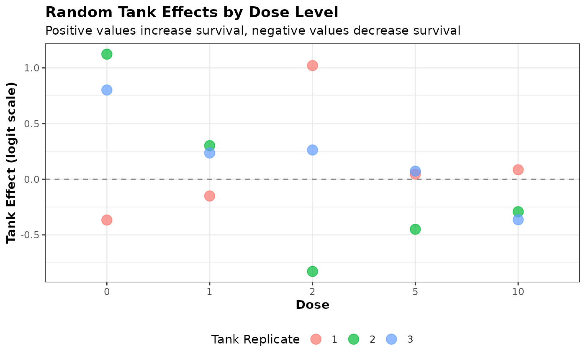

Analysis of quantal data typically involves the following steps as shown in the flowchart below:

Fisher’s Exact Test (comparing each dose to control)
Note that just two groups also work.
# Run the function
result <- compare_to_control_fisher(test_data, "treatment", "survived", "died",
control_level = "control",p.adjust.method="holm")
result
#> treatment p_value odds_ratio ci_lower ci_upper p_adjusted
#> 1 low 0.0153 5.8215 1.3182 36.6614 0.0153
#> 2 high 0.0000 19.6536 4.4429 126.9504 0.0000
ctab <- create_contingency_table(test_data,"treatment", "survived", "died")
drcHelper::many_to_one_fisher_test(ctab,ref.group = "treatment_control",p.adjust.method = "holm")
#> # A tibble: 2 × 6
#> group1 group2 n p p.adj p.adj.signif
#> * <chr> <chr> <dbl> <dbl> <dbl> <chr>
#> 1 treatment_control treatment_high 60 0.00000337 0.00000674 ****
#> 2 treatment_control treatment_low 60 0.0153 0.0153 *Note that with two groups, same functions can be used and the p_adjusted will always be equal to original p-value.
result <- compare_to_control_fisher(test_data%>%filter(treatment!="high")%>%droplevels(.), "treatment", "survived", "died",control_level = "control")
result
#> treatment p_value odds_ratio ci_lower ci_upper p_adjusted
#> 1 low 0.0153 5.8215 1.3182 36.6614 0.0153
ctab <- create_contingency_table(test_data %>% filter(treatment!="high") %>% droplevels(.),"treatment", "survived", "died")
drcHelper::many_to_one_fisher_test(ctab,ref.group = "treatment_control",p.adjust.method = "holm")
#> # A tibble: 1 × 6
#> group1 group2 n p p.adj p.adj.signif
#> * <chr> <chr> <dbl> <dbl> <dbl> <chr>
#> 1 treatment_control treatment_low 60 0.0153 0.0153 *
fisher.test(ctab)
#>
#> Fisher's Exact Test for Count Data
#>
#> data: ctab
#> p-value = 0.01533
#> alternative hypothesis: true odds ratio is not equal to 1
#> 95 percent confidence interval:
#> 1.318207 36.661382
#> sample estimates:
#> odds ratio
#> 5.82151
# CMH test
cmh_result <- data_long %>%
group_by(dose, condition) %>%
summarise(n = sum(count)) %>%
stats::mantelhaen.test()
# Print results
print("Fisher's Exact Test results (comparing each dose to control):")
print(fisher_results)
print("\nCochran-Mantel-Haenszel Test result:")
print(cmh_result)
# Calculate NOEC
noec <- max(fisher_results$dose[fisher_results$p_value > 0.05])Tarone’s Test
mymatrix1 <- matrix(c(4,5,5,103),nrow=2,byrow=TRUE)
colnames(mymatrix1) <- c("Disease","Control")
rownames(mymatrix1) <- c("Exposure","Unexposed")
mymatrix2 <- matrix(c(10,3,5,43),nrow=2,byrow=TRUE)
colnames(mymatrix2) <- c("Disease","Control")
rownames(mymatrix2) <- c("Exposure","Unexposed")
mylist <- list(mymatrix1,mymatrix2)
calcTaronesTest(mylist)
#> [1] "Pvalue for Tarone's test = 0.627420741721689"
#> $pval
#> [1] 0.6274207
#>
#> $tarone
#>
#> Equal-Effects Model (k = 2)
#>
#> I^2 (total heterogeneity / total variability): 0.00%
#> H^2 (total variability / sampling variability): 0.24
#>
#> Test for Heterogeneity:
#> Q(df = 1) = 0.2423, p-val = 0.6225
#>
#> Model Results (log scale):
#>
#> estimate se zval pval ci.lb ci.ub
#> 3.1355 0.5741 5.4613 <.0001 2.0102 4.2608
#>
#> Model Results (OR scale):
#>
#> estimate ci.lb ci.ub
#> 23.0006 7.4652 70.8663
#>
#> Cochran-Mantel-Haenszel Test: CMH = 36.6043, df = 1, p-val < 0.0001
#> Tarone's Test for Heterogeneity: X^2 = 0.2356, df = 1, p-val = 0.6274Trend Test
Cochran Armitage test for trend in binomial proportions across the
treament levels can be performed by prop.trend.test or
CochranArmitageTest from DescTools or use the
wrapper function prop_trend_test provided by
rstatix package. Step-down procedures can be performed
using the helper function in this package step_down_CA or
step_down_RSCA.
The Rao-Scott correction is needed when your binomial data exhibits overdispersion, which occurs when the observed variance in the data exceeds what would be expected under a simple binomial model. This is common in:
- Clustered data: When observations within a group (like organisms in the same tank) are more similar to each other than to organisms in different groups
- Hierarchical experimental designs: When there are multiple levels of sampling (e.g., tanks within treatments, organisms within tanks)
- Longitudinal studies: When the same subjects are measured repeatedly over time
- Ecological studies: Where environmental factors create additional variability beyond what a simple binomial model predicts
Without Rao-Scott correction, it is possible to underestimate standard errors, and obtain artificially small p-values (Type I errors).
Dispersion can be tested by many approaches. Some of them are: 1. Calculate the dispersion parameter (\(\phi\)) as the ratio of the Pearson chi-square statistic to its degrees of freedom. 2. Compare a binomial model to a quasi-binomial or beta-binomial model. 3. Dean’s test for overdispersion
DHARMa package provides a simulation-based overdispersion test.
Note that the Rao-Scott correction is used to deal with
over-dispersion and clustered data. The prop.trend.test
uses a \(\chi^2\) statistic which is
the square of \(Z\) statistic used in
drcHelper::cochranArmitageTrendTest or
DescTools::CochranArmitageTest. Also
prop.trend.test only gave two sided test p-values, whereas
DescTools::CochranArmitageTest only gives one-sided or
two-sided p-values and do not allow the specification of the
direction.
library(DescTools)
test_data <- matrix(c(10,9,10,7, 0,1,0,3), byrow=TRUE, nrow=2, dimnames=list(resp=0:1, dose=0:3))
## DescTools::Desc(dose)
DescTools::CochranArmitageTest(test_data)
#>
#> Cochran-Armitage test for trend
#>
#> data: test_data
#> Z = -1.8856, dim = 4, p-value = 0.05935
#> alternative hypothesis: two.sided
stats::prop.trend.test(c(10,9,10,7),rep(10,4),0:3)
#>
#> Chi-squared Test for Trend in Proportions
#>
#> data: c(10, 9, 10, 7) out of rep(10, 4) ,
#> using scores: 0 1 2 3
#> X-squared = 3.5556, df = 1, p-value = 0.05935
drcHelper::cochranArmitageTrendTest(c(10,9,10,7),rep(10,4),0:3)
#>
#> Cochran-Armitage test for trend
#>
#> data: proportions 1, 0.9, 1, 0.7 at doses 0, 1, 2, 3
#> = -1.8856, p-value = 0.05935
#> alternative hypothesis: two.sided
DescTools::CochranArmitageTest(test_data,alternative = "one.sided")
#>
#> Cochran-Armitage test for trend
#>
#> data: test_data
#> Z = -1.8856, dim = 4, p-value = 0.02967
#> alternative hypothesis: one.sided
cochranArmitageTrendTest(c(10,9,10,7),rep(10,4),0:3,alternative = "less")
#>
#> Cochran-Armitage test for trend
#>
#> data: proportions 1, 0.9, 1, 0.7 at doses 0, 1, 2, 3
#> = -1.8856, p-value = 0.02967
#> alternative hypothesis: less
cochranArmitageTrendTest(c(10,9,10,7),rep(10,4),0:3,alternative = "greater")
#>
#> Cochran-Armitage test for trend
#>
#> data: proportions 1, 0.9, 1, 0.7 at doses 0, 1, 2, 3
#> = -1.8856, p-value = 0.9703
#> alternative hypothesis: greaterNote this is a bit different from the independence_test
in package coin.
An example with clustered data
# Simulate a toxicity experiment with tank effects
set.seed(123)
# Experimental design
doses <- c(0, 1, 2, 5, 10) # Dose levels
tanks_per_dose <- 3 # Replicate tanks per dose
organisms_per_tank <- 10 # Organisms per tank
# Create data frame
experiment <- expand.grid(
dose = doses,
tank = 1:tanks_per_dose
)
experiment$tank_id <- 1:nrow(experiment)
# Add random tank effect (creates correlation within tanks)
# Higher ICC_tank values create stronger clustering
ICC_tank <- 0.3 # Intraclass correlation coefficient for tank effect
tank_effect <- rnorm(nrow(experiment), mean = 0, sd = sqrt(ICC_tank/(1-ICC_tank)))
# Generate survival data with dose-response relationship and tank effect
generate_survival <- function(dose, tank_effect) {
# Base survival probability (decreases with dose)
p_base <- 0.9 - 0.08 * dose
# Apply tank effect on logit scale
logit_p <- log(p_base/(1-p_base)) + tank_effect
p_with_tank <- exp(logit_p)/(1+exp(logit_p))
# Generate binomial outcomes for each organism
rbinom(organisms_per_tank, size = 1, prob = p_with_tank)
}
# Generate data for each tank
tank_data <- lapply(1:nrow(experiment), function(i) {
survivors <- generate_survival(experiment$dose[i], tank_effect[i])
data.frame(
dose = experiment$dose[i],
tank_id = experiment$tank_id[i],
tank = experiment$tank[i],
organism = 1:organisms_per_tank,
survived = survivors
)
})
# Combine all data
all_data <- do.call(rbind, tank_data)
# Summarize by tank (this is often how data is analyzed)
tank_summary <- aggregate(survived ~ dose + tank_id, data = all_data,
FUN = function(x) c(sum = sum(x), total = length(x)))
tank_summary$successes <- tank_summary$survived[,"sum"]
tank_summary$totals <- tank_summary$survived[,"total"]
# View the summarized data
print(tank_summary[, c("dose", "tank_id", "successes", "totals")])
#> dose tank_id successes totals
#> 1 0 1 8 10
#> 2 1 2 9 10
#> 3 2 3 9 10
#> 4 5 4 5 10
#> 5 10 5 0 10
#> 6 0 6 9 10
#> 7 1 7 10 10
#> 8 2 8 5 10
#> 9 5 9 4 10
#> 10 10 10 1 10
#> 11 0 11 9 10
#> 12 1 12 10 10
#> 13 2 13 9 10
#> 14 5 14 7 10
#> 15 10 15 0 10
# Aggregate by dose (ignoring tank structure - incorrect approach)
dose_summary <- aggregate(cbind(successes, totals) ~ dose, data = tank_summary, FUN = sum)
print(dose_summary)
#> dose successes totals
#> 1 0 26 30
#> 2 1 29 30
#> 3 2 23 30
#> 4 5 16 30
#> 5 10 1 30
# Test for overdispersion using the aggregated data (by dose)
simple_model <- glm(cbind(successes, totals - successes) ~ dose,
family = binomial(), data = dose_summary)
overdispersion_result <- test_overdispersion(dose_summary$successes, dose_summary$totals, simple_model)
print(overdispersion_result)
#> $dispersion
#> [1] 1.671489
#>
#> $p_value
#> [1] 0.170741
#>
#> $interpretation
#> [1] "Overdispersion detected"
# Now compare standard Cochran-Armitage test vs. Rao-Scott corrected version
library(drcHelper) # Assuming your package is installed
# Standard test
ca_test <- cochranArmitageTrendTest(
successes = dose_summary$successes,
totals = dose_summary$totals,
doses = dose_summary$dose
)
# Rao-Scott corrected test
ca_test_rs <- cochranArmitageTrendTest(
successes = dose_summary$successes,
totals = dose_summary$totals,
doses = dose_summary$dose,
rao_scott = TRUE
)
# Compare results
print(ca_test)
#>
#> Cochran-Armitage test for trend
#>
#> data: proportions 0.867, 0.967, 0.767, 0.533, 0.033 at doses 0, 1, 2, 5, 10
#> = -8.3049, p-value < 2.2e-16
#> alternative hypothesis: two.sided
print(ca_test_rs)
#>
#> Rao-Scott corrected Cochran-Armitage test for trend
#>
#> data: proportions 0.867, 0.967, 0.767, 0.533, 0.033 at doses 0, 1, 2, 5, 10
#> = -1.9646, p-value = 0.04947
#> alternative hypothesis: two.sided
# Step-down tests
step_down <- stepDownTrendTestBinom(
successes = dose_summary$successes,
totals = dose_summary$totals,
doses = dose_summary$dose
)
step_down_rs <- stepDownTrendTestBinom(
successes = dose_summary$successes,
totals = dose_summary$totals,
doses = dose_summary$dose,
rao_scott = TRUE
)
print(step_down)
#>
#> Step-down Cochran-Armitage test for trend
#>
#> data: successes out of totals at doses 0, 1, 2, 5, 10
#>
#> Step-down results:
#> Doses_Included Statistic P_Value
#> Step 1 0, 1, 2, 5, 10 -8.304949 9.986261e-17
#> Step 2 0, 1, 2, 5 -3.908588 9.283697e-05
#> Step 3 0, 1, 2 -1.139332 2.545648e-01
#> Step 4 0, 1 1.401298 1.611249e-01
#>
#> Alternative hypothesis: two.sided
#> NOEC: 2
#> LOEC: 5
print(step_down_rs)
#>
#> Step-down Rao-Scott corrected Cochran-Armitage test for trend
#>
#> data: successes out of totals at doses 0, 1, 2, 5, 10
#>
#> Step-down results:
#> Doses_Included Statistic P_Value
#> Step 1 0, 1, 2, 5, 10 -1.9645577 0.04946545
#> Step 2 0, 1, 2, 5 -1.5840507 0.11318218
#> Step 3 0, 1, 2 -0.7071068 0.47950012
#> Step 4 0, 1 1.0000000 0.31731051
#>
#> Alternative hypothesis: two.sided
#> NOEC: 5
#> LOEC: 10Visualize the tank effects

# Arrange all plots in a grid
# Requires gridExtra package
library(gridExtra)
combined_plot <- grid.arrange(p1, p2, p3, p4, ncol = 2)
ggsave("binomial_tank_effects_visualization.png", combined_plot, width = 12, height = 10, dpi = 300)
The plot on the upper left shows the survival proportions for each tank (colored points) at each dose level. The black diamonds represent the mean survival proportion at each dose level, and the dashed line shows the theoretical dose-response relationship without tank effects. The variation among tanks at the same dose level illustrates the tank effect.
The plot on the upper right shows the dispersion factor (\(\phi\)) at each dose level, calculated as the ratio of observed variance to expected binomial variance. Values greater than 1 indicate overdispersion. The red dashed line at \(\phi\) = 1 represents what would be expected under a pure binomial model with no tank effects.
The plot on the bottom left compares the expected variance under a binomial model (green bars) with the observed variance (orange bars) at each dose level. The difference between these values demonstrates the additional variance introduced by the tank effects.
The plot on the bottom right shows the actual random effects assigned to each tank in the simulation. Positive values increase survival probability, while negative values decrease it. This visualization helps understand how tank-specific conditions can influence the results.
From this plot, we can see even at the same dose level, there’s considerable variation in survival proportions between tanks, which wouldn’t be expected under a simple binomial model. The dispersion factors (\(\phi\)) are consistently greater than 1, indicating overdispersion that should be accounted for in the analysis. The observed variance is higher than what would be expected under a binomial model, particularly at intermediate dose levels where the binomial variance is naturally highest. The standard Cochran-Armitage test produces a smaller p-value than the Rao-Scott corrected version, potentially leading to different conclusions about the significance of the dose-response relationship.
This example demonstrates why the Rao-Scott correction is important when analyzing clustered binomial data. Without accounting for the overdispersion caused by tank effects, the standard analysis would underestimate the uncertainty in the results and potentially lead to overly confident (and incorrect) conclusions about the dose-response relationship.
# Run the Cochran-Armitage tests for comparison
# Using the dose-level aggregated data (incorrect approach that ignores clustering)
ca_test <- cochranArmitageTrendTest(
successes = dose_summary$total_successes,
totals = dose_summary$total_organisms,
doses = dose_summary$dose
)
# With Rao-Scott correction
ca_test_rs <- cochranArmitageTrendTest(
successes = dose_summary$total_successes,
totals = dose_summary$total_organisms,
doses = dose_summary$dose,
rao_scott = TRUE
)
# Print results
cat("\nStandard Cochran-Armitage Test:\n")
#>
#> Standard Cochran-Armitage Test:
print(ca_test)
#>
#> Cochran-Armitage test for trend
#>
#> data: proportions 0.867, 0.967, 0.767, 0.533, 0.033 at doses 0, 1, 2, 5, 10
#> = -8.3049, p-value < 2.2e-16
#> alternative hypothesis: two.sided
cat("\nRao-Scott Corrected Cochran-Armitage Test:\n")
#>
#> Rao-Scott Corrected Cochran-Armitage Test:
print(ca_test_rs)
#>
#> Rao-Scott corrected Cochran-Armitage test for trend
#>
#> data: proportions 0.867, 0.967, 0.767, 0.533, 0.033 at doses 0, 1, 2, 5, 10
#> = -1.9646, p-value = 0.04947
#> alternative hypothesis: two.sided
# Calculate the estimated dispersion parameter
phi_est <- mean(dose_summary$overdispersion, na.rm = TRUE)
cat("\nEstimated overall dispersion parameter:", round(phi_est, 2), "\n")
#>
#> Estimated overall dispersion parameter: 3.77